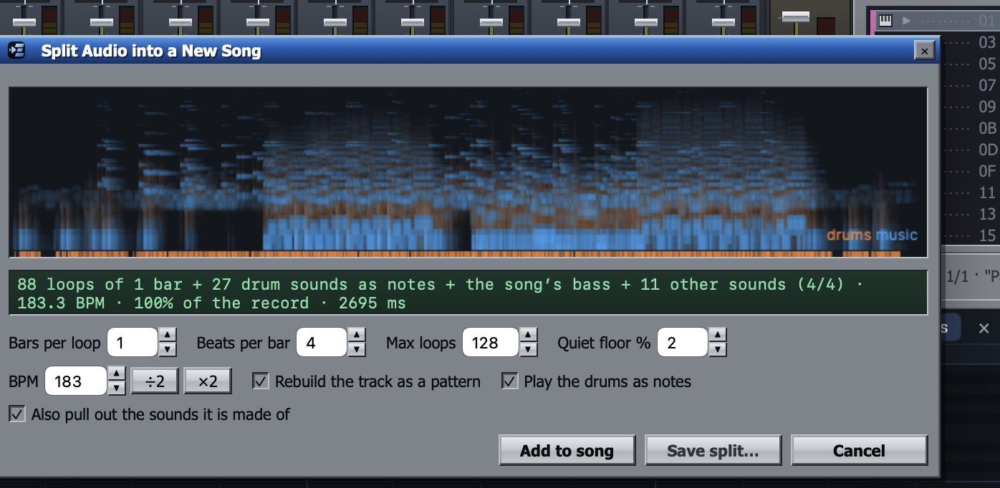
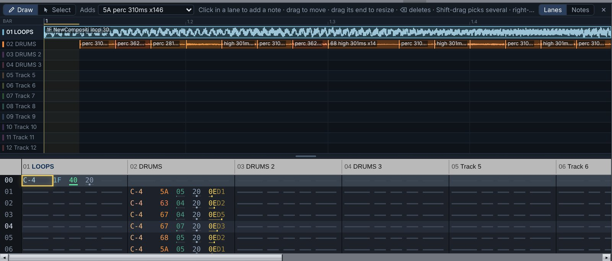

EditLab Tracker
Fix the one part of your AI song that went wrong. Keep the rest.
Drop a finished song onto the window, an AI track or your own, and it comes back as a project you can edit: the drums as notes on a grid, the rest of the music as one-bar loops of the record, and the song's bass and other sounds in the instrument list to build with. Until you change something, it plays back sounding like the original, in stereo. So you fix the bar that went wrong, and everything else stays exactly as it was.
Free to download. Pro is a one-time $24.99 USD, with no subscription.

How a repair works
- Split the song. Choose File ▸ Split a Song…, or drop an MP3, WAV or M4A onto the window. Tracker finds the tempo and the bars, and you can change the BPM or how many bars make a loop before you add it.
- Find what went wrong. Play it. The side view shows every part as a lane, the loops as waveforms and the drum hits on their own lanes, so you can see where the problem is.
- Fix just that part. Swap a broken bar for a clean pass of the same part from elsewhere in the song. Open that bar's loop in the sample editor to smooth the hiss, cut a glitch or fade it. Or change the drum notes. Every edit shows in both the side view and the tracker grid.
- Export. Save it as WAV or M4A with Pro. Every export checks itself for clicks, clipping, a cut-off ending and dropouts, and if it finds one, tells you where in the song to listen.

How it compares
Audacity edits the finished waveform, and BandLab's splitter gives you stems. Tracker turns the song into a playable project instead: drum hits on a grid, and the music as loops and sounds on their own tracks. So you can treat or replace just the part carrying the hiss, or swap a broken section for a clean pass of the same part.
What it doesn't do: pull out a clean vocal stem the way BandLab does. Vocals stay inside the music loops.
Also a full music tracker
- A pattern grid with note, instrument, volume, pan and effect columns, arranged in an order list, and a side view that shows the same pattern as lanes or as a piano roll; edit in either
- Sample and synth instruments, your own audio in any slot, and a sample editor with cut, copy, paste, fades, smoothing and loop points
- A mixer with a fader, pan, mute, solo and a live meter per channel, and a master bus
- Effect racks on every channel and the master, with seventeen built-in effects, plus effect designs from
.eltrkfxfiles - Automation of volume, pan, effect parameters and tempo
- Songs saved as
.eltrkfiles
Free and Pro
- Free: write, edit, play and save songs, all the demo songs, and three splits of your own songs
- Pro, a one-time $24.99 USD: unlimited splitting, WAV and M4A export, sample export, and saving splits as sample packs
Requirements, formats and privacy
- A Mac with macOS 14 or later
- Imports MP3, WAV and M4A; exports WAV, and M4A at 256 kb/s
- Everything runs on your Mac: no account, no network requests, nothing uploaded, no data collected
For reviewers and creators
Writing about AI music or teaching people to fix their songs? Email markkaminsky99@gmail.com for a Pro code.